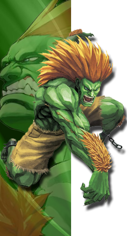

Ficha Técnica
Blanka

Primeira aparição: Street Fighter II The World Warrior (1991)
Nascimento: 12 de fevereiro de 1966.
Altura: 192cm.
Peso: 96kg.
Medidas: B198, C120, Q172.
Tipo sanguíneo: B.
Habilidades especiais: Caçar, Eletricidade.
Gosta: Frutas tropicais, Pirarucu, Sua mãe.
Desgosta: Army ants (espécie de formiga).
Estilo de luta: Luta Selvagem autodidata (Army Ants) / Capoeira.
Origem: Brasil (lugar de nascença é provável como sendo Tailândia).
Uma fala de vitória: "Ver você em ação é uma piada!"
SSF2 nickname: "A selvagem criança da natureza".
SFA3 nickname: "A animal pessoa amazônica".
SF4 nickname: "Guerreiro da selva".
SFA3 stage: Ramificação do Rio Madeira - pantano, Brasil (ramificação do rio Madeira: talvez possa ser
Mato Grosso, ou Tocantins?).
SF2 stage: Bacia do rio Amazonas (Brasil).
Golpes especiais famosos: Electric Thunder, Rolling Attack.